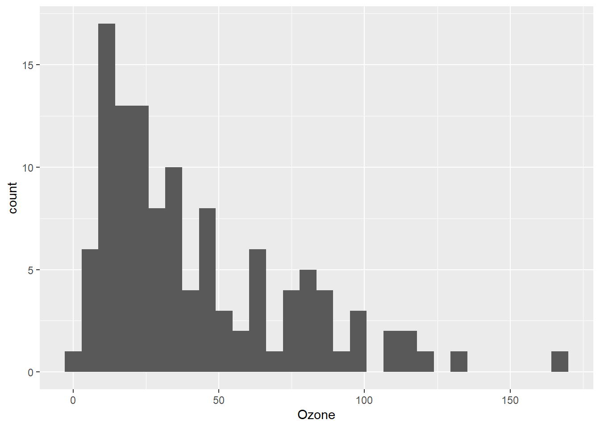
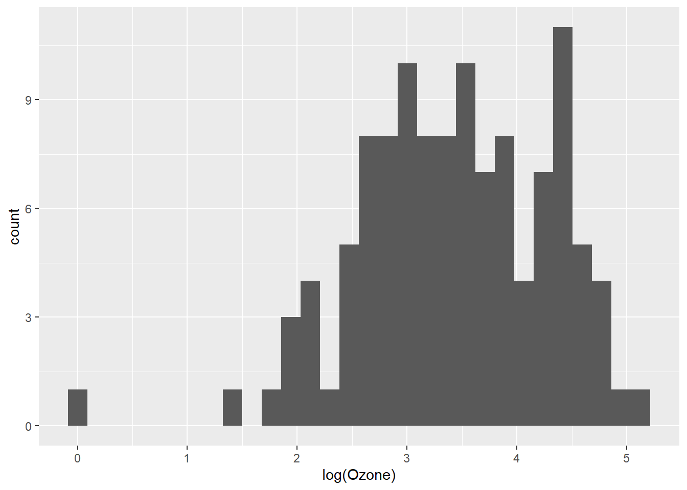
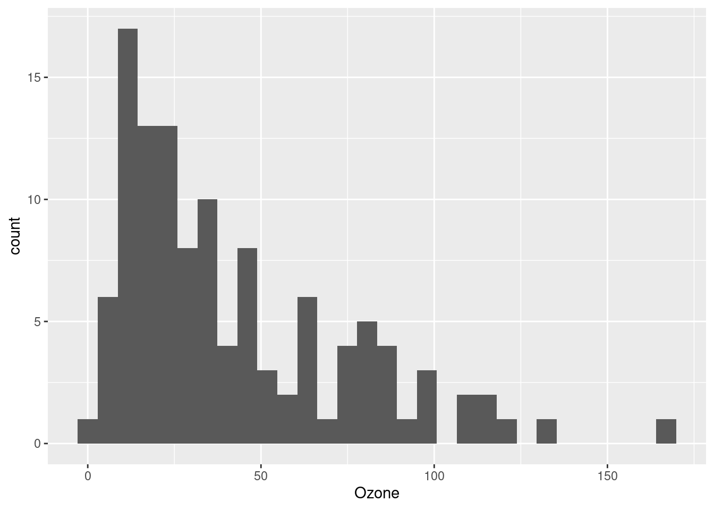
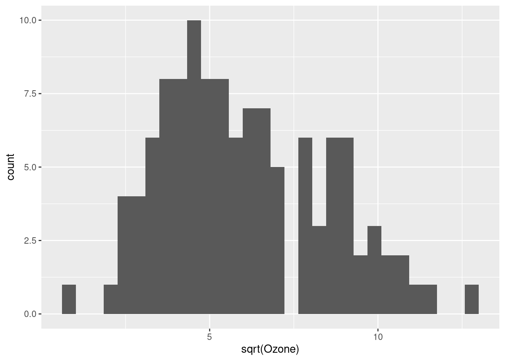
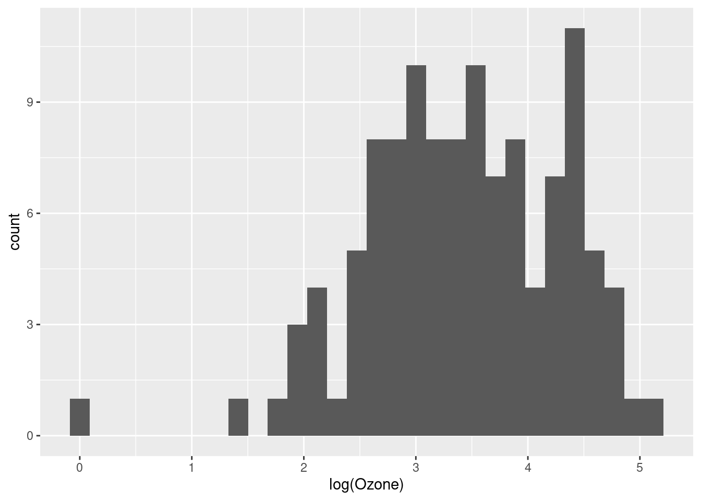
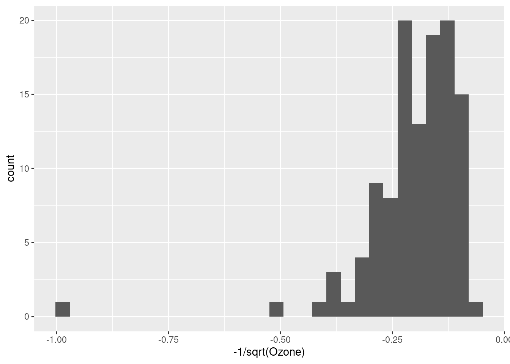
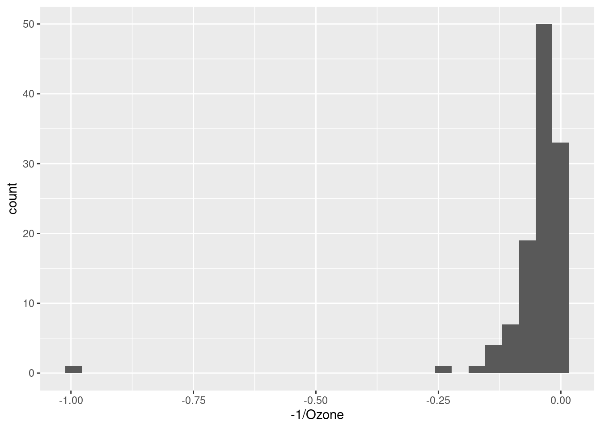
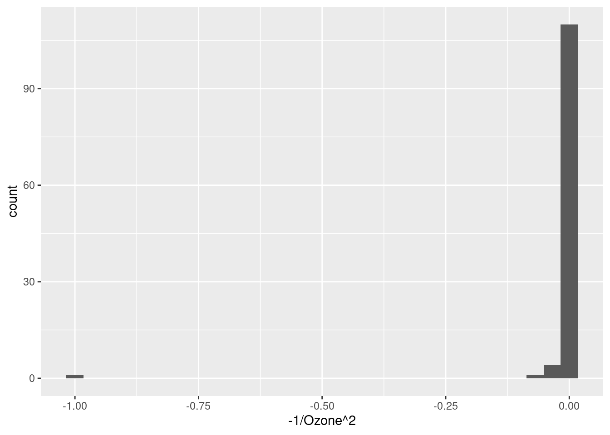

library(ggplot2)Applying (log) transformations in R
Preliminaries
Load ggplot2 for plotting
Transformation basics
What are “transformations?
When we talk about “transforming” data in the contexts of statistics and data analysis, it just means that we take a variable and alter or convert its values from one scale to another.
Why transform?
There are all kinds of reasons we might want to apply a transformation, and we will come across a few in this course. But in general, the idea is that one or more of the following things might motivate us to transform our data in some way:
- We may want to change the unit scale to something that is more easily interpretable or understandable.
- We may want to alter some variables so that they are on comparable scales (in order to be able to make more “apples to apples” comparisons).
- We may need to transform our data in a way in order to facilitate our statistical or analytical methods or assumptions.
What kinds of transformations are there?
There are as many potential transformations as we can imagine, but for our purposes, it’s essential to be able to understand the difference between linear and non-linear transformations.
We will return to this distinction in the next unit, when we start creating scatterplots, but the general idea is that if a transformation is linear, then it adds, subtracts, multiplies, or divides by some constant. It’s like the data is getting “shifted” or “stretched” in some consistent way that doesn’t really change how the values are related to each other. An example might be converting Fahrenheit to Celsius, or dollars to euros, or pounds to kilograms. “Standardizing” or creating z-scores is another example of a linear transformation that we will discuss later in the course.
In contrast, a non-linear transformation alters the underlying “shape” of the data. Any kind of exponential or logarithmic function is an example of this, because you can think of it as “stretching” or “squishing” some parts of the data more than others. Non-linear transformations are very useful if we want to change the shape of our data, like making a skewed distribution less skewed.
Example: log-transformation
In order to make this a bit more concrete, and to illustrate the process in R, let’s consider one of the more common (and useful!) transformations in data analysis, the logarithm (or just “log” for short).
What’s a logarithm?
In simple terms, a logarithm is the inverse of an exponent. For example, recall that 10 to the 0th power is 1, 10 to the 1st power is 10, 10 to the 2nd power is 100, 10 to the 3rd power is 1000, and so on. Taking the (base-10) logarithm is simply converting a value to the power of 10 it would take to get that value. So the (base-10) log of 1000 is 3, the log of 100 is 2, and the log of 42 is (approximately) 1.62.
So when we perform a log transform, what we are doing is converting the raw value to the power that the base is taken to, in order to get the raw value. So if our raw data was a sequence [10, 10, 100, 10, 1000], after log-transforming the data, it would be [1, 1, 2, 1, 3].
The base of the logarithm is the number you are getting the power of. So while the base-10 logarithm of 1000 is 3, if we took the base-2 logarithm of 8, we would also get 3, since 2 (from base-2) to the 3rd power is 8.
When we are doing data analysis, it actually doesn’t matter all that much what base we use when log-transforming, because the effect on the “shape” of the data is the same. The two most common options are the base-10 logarithm and the natural logarithm. The natural log is the default in R and other programming languages, and it literally means “exponent of the constant \(e\)”.1 Unless it helps people interpret the results of your analysis, it doesn’t much matter what base you pick, so you might as well stick with the default base-\(e\) of the natural logarithm.
1 e is a special mathematical constant, like \(pi\), and it is approximately 2.718
Is there a less mathy way of thinking about a logarithm?
It’s hard to get away from the math completely, but for our purposes, the idea is that when we take the log of a value, we are “stretching out” the distances between smaller values and “shrinking” the distances between larger values.
Take the simple base-10 log examples. Let’s say we had the sequence of values 1, 10, 100, and 1000. The difference between the two smallest values (1 and 10) is much smaller than the difference between the two largest values (100 and 1000). Log-transforming the sequence 1, 10, 100, and 1000 would convert it to the sequence 0, 1, 2, and 3. After log transformation, the difference between the two smallest values in this sequence (0 and 1) is the same as the difference between the two largest (2 and 3). This is what I mean when I say that log-transformation is like “shrinking” the distances in the higher part of the range and/or “stretching out” distances in the lower part of the range.
Examples will help. We will get to that shortly.
When should you try a log transform?
You can keep the following rules of thumb in mind when considering whether to transform your data. In particular, if the following are true, it might be a good idea to log-transform your data:
- The measure is completely positive: Logs of zero are infinite, and logs of negative numbers are not defined, so you can’t compute logs if you have any zeros or negative numbers. If your variable is conceptually required to be positive, like the weight of an object (which cannot possibly be negative or truly zero), then it could be a good candidate for a log transformation.
- The range of the measure spans multiple orders of magnitude: If you look across the range of the variable, and the larger values are many times larger than the smaller values, then there’s a good chance that log-transformation is a good thing to consider. For example, if your variable is the weight of household objects, from paperclips and other small items up to appliances that are thousands or millions of times heavier than the smaller objects, then log transformations might be useful. But if you’re looking at the weights of something like adult male humans, it may just not make much difference in your analysis to log-transform the data.
These aren’t absolute rules or ironclad justifications. They are just common patterns to look out for. If the data follows these patterns, it’s usually a good bet that log-transformation would be helpful.
In the end, it is sometimes something you just need to try, to see if it’s helpful.
How to transform data, and how to decide if it’s a good idea
Simple functions
While the decision whether to transform or not can be fuzzy sometimes, the process of how to perform a log transformation is very easy in R. There’s a function log() that will simply convert a vector of numbers to a vector of (natural) log values.2
2 And if you prefer base-10 logs, log10() gets you those.
Example: plotting air quality
There is a built-in data set in R called airquality, which is a data frame of measurements in New York from May 1, 1973 to September 30, 1973. In particular, there is an Ozone column, which is the average ozone in parts per billion, measured in the early afternoon at Roosevelt Island.
Before we even look at the distribution, we already know that this measure has to be positive and non-zero (since there’s always going to be some level of ozone in the air), and we can make a guess that there may be enough fluctuations in ozone that the range could span a few orders of magnitude – in other words, several multiples. If we look at the quartiles, we can see that the lower range is in the single digits and the upper is well over 100, which confirms our guess.
quantile(airquality$Ozone, na.rm = TRUE) # dropping missing values 0% 25% 50% 75% 100%
1.00 18.00 31.50 63.25 168.00 As a quick aside, there are many different ways to deal with missing data (NA values in R). Sometimes just dropping or ignoring them is fine. There are many functions, including common ones like sum(), mean(), and quantile() that have an argument na.rm, which is usually FALSE by default. If you set na.rm to TRUE, the function will essentially ignore all NAs before performing the calculation.
3 We do still end up with a warning, telling us that we have “37 rows containing non-finite outside the scale range”. This is a common warning you may get from ggplot() when you have NAs. Basically ggplot is telling us, “hey, you asked me to plot this, but I can’t plot an NA value, so I’m going to just tell you that there were 37 NA values that I can’t show in this plot.”
So now let’s plot a simple histogram (setting the number of bins to keep ggplot from reminding us that 30 bins is the default):3
ggplot(airquality, aes(Ozone)) + geom_histogram(bins = 30)Warning: Removed 37 rows containing non-finite outside the scale range
(`stat_bin()`).
Now we can clearly see that this is a (right-)skewed distribution, meaning that the lower values are clumped closely together and the upper values are more spread-out. This is potentially perfect for a log-transformation, because of what we said above: you can think of log-transformation as “stretching” the distances between smaller values and “shrinking” the differences between larger values.
But we might not want to alter our data frame right away. One handy thing is that when you use ggplot to plot your data, you can apply transformations inside the function call, as sort of a “one-time” transformation that doesn’t permanently alter your data frame. Here’s an example of taking the same code as above, and just adding the log transformation inside the plot (this time, suppressing the warning about NAs):
ggplot(airquality, aes(log(Ozone))) + geom_histogram(bins = 30)
That looks a lot better, and more like a normal distribution.4
4 As additional practice, try plotting the theoretical normal distribution over this transformed data, to see how close it is to a normal, after being transformed.
At this point, we might decide that we don’t want to constantly transform the variable every time we use it, so we would like to create a new variable in our data frame, which is simply the log-transformed version of our existing Ozone column.
That is very straightforward in R, and the only thing to try to decide is what we want to call the new column. Ozone_log seems clear enough!
airquality$Ozone_log <- log(airquality$Ozone)Now that this is in our data frame, we can just plot it directly:
ggplot(airquality, aes(Ozone_log)) + geom_histogram(bins = 30)
Some alternatives to log-transforming: the Tukey Ladder
John Tukey (renowned godfather of EDA) encouraged the liberal use of transformations, especially during exploratory analysis, in order to explore different ways of “shaping” the data. While the log transformation is frequently very useful, sometimes it’s not enough, or too much. Tukey introduced the idea of a “ladder” of functions that “tilt” the shape of a distribution to different degrees. If we start with the data as-is, and then consider functions that “tilt” the data more and more away from right-skew and towards left-skew, we have the following sequence:
- x (no change)
- \(\sqrt{x}\)
- \(log(x)\)
- \(\frac{-1}{\sqrt{x}}\)
- \(\frac{-1}{x}\)
- \(\frac{-1}{x^2}\)
We can see these in action with our Ozone data. Notice how the shape of the distribution changes from right-skewed (a long “tail” to the right) to very left-skewed. I still think the log-transformation looks the best, but it’s handy to know about these other alternatives.
ggplot(airquality, aes(Ozone)) + geom_histogram(bins = 30)
ggplot(airquality, aes(sqrt(Ozone))) + geom_histogram(bins = 30)
ggplot(airquality, aes(log(Ozone))) + geom_histogram(bins = 30)
ggplot(airquality, aes(-1/sqrt(Ozone))) + geom_histogram(bins = 30)
ggplot(airquality, aes(-1/Ozone)) + geom_histogram(bins = 30)
ggplot(airquality, aes(-1/Ozone^2)) + geom_histogram(bins = 30)
But is it a good idea?
So we have established that log-transforming the Ozone variable seems to have made it look more like a normal distribution, and that it seems like it could be appropriate since the Ozone measurements are all positive and span multiple orders of magnitude.
But what’s the point? Is it actually a good thing to do, and if so, why? This is the million-dollar question.
Just making a distribution look “more normal” isn’t necessarily the end-all-be-all, but it’s often a good idea. Whether or not it turns out to be a good idea will depend a lot on our ultimate analysis. For example, as we progress into linear regression, we will discuss how normally-distributed residuals are a much more important assumption than normally-distributed variables. But residuals are only something we can look at after we perform our analysis.
So the fact is that at the initial EDA stage, we simply may not have a foolproof way to decide whether transformation is a “good idea” or not. At this point, all we can say from our exploration is that the Ozone variable in its original scale does not look normally-distributed, but the log transformation of it is closer to a normal. This is something we should take note of and return to, when we are carrying out our inferential analysis later.
But in the absence of other considerations, when in doubt, if a transformation seems to make sense and/or it makes a distribution look more like a reasonable distributional shape (like a normal), then it’s a good bet that that’s a good transformation to at least try. R makes it easy to do, and making transformed versions of variables is something we should feel very free to do and explore.
What’s next?
This tutorial is a short “side-bar” tutorial, that relates to a few different things we might want to do. The point was to show you how to do it, and to talk a little more in-depth about logarithmic transformations in particular, since they are frequently a good idea.
Hopefully this was helpful, but if it doesn’t quite seem helpful yet, just bookmark it and come back when it seems like it might come in handy!